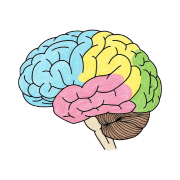
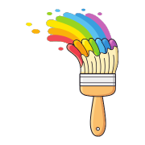

Algo sobre mí
Soy docente, diseñadora pedagógica STEAM y geóloga, con formación en educación, neuropsicología y tecnología. Mi trabajo conecta las ciencias experimentales, el aprendizaje inclusivo y el desarrollo de soluciones digitales.
Me gusta transformar conceptos complejos en experiencias de aprendizaje comprensibles, prácticas y motivadoras. Para ello, combino el Diseño Universal para el Aprendizaje (DUA), las metodologías activas y la experimentación, teniendo en cuenta que cada persona aprende de una manera diferente.
Mi trayectoria une la investigación científica, la formación, la educación ambiental y el desarrollo de software. Me interesa especialmente encontrar formas creativas de conectar ciencia, tecnología, naturaleza y educación, utilizando las herramientas digitales cuando realmente aportan valor.
Creo en las aulas con vida, los proyectos con propósito y las explicaciones sencillas sin perder rigor técnico ni científico. Disfruto diseñando propuestas que despierten la curiosidad, faciliten la participación y ayuden a aprender haciendo.
Este portfolio sigue esa misma filosofía: una web sencilla, accesible y ligera, desarrollada con atención a su rendimiento y a su impacto ambiental.
¿Cómo trabajo?
Combino el rigor del método científico con la creatividad pedagógica y las herramientas tecnológicas para diseñar experiencias útiles, accesibles y adaptadas a cada contexto.
Diseño inclusivo y DUA
Diseño propuestas educativas teniendo en cuenta la diversidad del alumnado. Busco reducir barreras y ofrecer diferentes formas de presentar los contenidos, participar y demostrar lo aprendido.
Pedagogía STEAM y experimentación
Diseño actividades prácticas basadas en la observación, la indagación y la experimentación. Conecto ciencia, tecnología, naturaleza y arte para aprender explorando, creando y resolviendo retos.
EdTech y desarrollo digital
Utilizo mis conocimientos de programación y diseño web para desarrollar plataformas, aplicaciones y recursos interactivos. Me interesa especialmente la tecnología que resuelve problemas reales y mejora las experiencias de aprendizaje.
Trayectoria profesional y docente
- 2026 - Actualidad — TransversaLab (Fundadora y Diseñadora Pedagógica): Desarrollo de una iniciativa centrada en la divulgación sobre neurodivergencias, la educación inclusiva y la innovación pedagógica. Diseño de charlas y pequeñas formaciones dirigidas a familias y docentes, con atención al DUA, la diversidad en el aprendizaje y las metodologías STEAM.
- 2024 - Actualidad — GeobiziTIK (Desarrolladora Web y Diseñadora Digital): Diseño y desarrollo de páginas web responsivas, plataformas digitales y aplicaciones interactivas. Creación de soluciones de gestión, sistemas de reservas y experiencias de gamificación, prestando atención a la accesibilidad, la experiencia de usuario, el rendimiento y la sostenibilidad digital.
- 2019 - Actualidad — Geobizi (Directora de Proyectos y Divulgación Ambiental): Diseño y coordinación de programas de educación ambiental, talleres científicos y proyectos de participación comunitaria. Desarrollo de actividades STEAM, rutas interpretativas e iniciativas de biodiversidad y biorregeneración para centros educativos, familias y administraciones públicas.
- 2024 - 2025 — Peñascal Koop. & Zimendu (Desarrolladora Web y Formadora Técnica): Desarrollo de software de gestión interna y soluciones digitales. Impartición de masterclasses de programación, metodologías ágiles e inteligencia artificial, combinando conocimientos técnicos con aplicaciones prácticas.
- 2022 - 2024 — Centro de Estudios INATEC (Docente de Formación Profesional para el Empleo): Impartición de certificados de profesionalidad y módulos formativos relacionados con sostenibilidad, huerto urbano, ecoturismo y dinamización sociocultural. Planificación didáctica, diseño de actividades y evaluación por competencias.
- 2017 - 2018 — Universidad del País Vasco (UPV/EHU) (Personal Investigador y Técnico en Micropaleontología): Participación en proyectos de investigación geológica y ambiental mediante análisis micropaleontológicos y bioestratigráficos, así como colaboración en actividades de divulgación científica universitaria.
Formación académica y especialización
- Máster Universitario en Neuropsicología y Educación — UNIR (en curso, 2026)
- Máster Universitario en Formación del Profesorado (Educación Secundaria y Formación Profesional) — VIU
- Máster Universitario en Cuaternario: Cambios Ambientales y Huella Humana — UPV/EHU
- Licenciatura en Geología — UPV/EHU
- Docencia de la Formación Profesional para el Empleo (SSCE0110) — 380 h
- Acreditación de Docentes para Teleformación (OC22202600) — Lanbide
- Certificado de Profesionalidad en Confección y Publicación de Páginas Web (IFCD0110) — 900 h
- Bootcamp de Data Science — C2B (490 h)
Otras áreas de especialización
Formación complementaria y competencias que conectan mi experiencia científica, pedagógica y tecnológica.
Explorar especializaciones y formación complementaria

Neuroeducación, inclusión y aprendizaje
Diseño Universal para el Aprendizaje (DUA), neuroeducación, diversidad en el aprendizaje, estrategias inclusivas y acompañamiento educativo.
Pedagogía activa y formación docente
Didáctica de las ciencias experimentales, metodologías activas STEAM, formación de formadores, diseño de actividades prácticas y dinamización de grupos.

Tecnología educativa, programación y datos
Desarrollo web, Python, SQL, ciencia de datos, gamificación, diseño de interfaces, herramientas digitales y metodologías ágiles.
Medioambiente, geología y sostenibilidad
Geología, Cuaternario, micropaleontología, evolución ambiental, educación ambiental, ecoturismo, sostenibilidad y proyectos de biodiversidad y biorregeneración.
Pedagogía, Formación y Proyectos STEAM
Diseño actividades, recursos y propuestas formativas que conectan el aprendizaje con situaciones reales. Estas son algunas de las líneas en las que trabajo y desarrollo nuevos proyectos.
Áreas de trabajo educativo y formativo
Charlas sobre Neurodivergencias e Inclusión
TransversaLab: Desarrollo de una iniciativa de divulgación y formación para familias y docentes sobre neurodivergencias, diversidad en el aprendizaje y estrategias educativas inclusivas. Diseño de propuestas prácticas y accesibles, adaptadas a cada público.
Formación Docente y Metodologías STEAM
Diseño de talleres para profesorado centrados en la experimentación científica, los laboratorios prácticos, la transposición didáctica y la creación de situaciones de aprendizaje manipulativas e interdisciplinares.
Docencia y Formación para el Empleo
Experiencia docente en formación profesional y teleformación, con planificación didáctica, actividades prácticas y evaluación por competencias en ámbitos técnicos, ambientales y socioculturales.
Educación Ambiental y Biorregeneración
Geobizi: Diseño de rutas interpretativas, talleres científicos, actividades STEAM y proyectos participativos relacionados con la biodiversidad, el patrimonio natural y la sostenibilidad.
Proyectos Digitales y EdTech
Desarrollo de soluciones web, aplicaciones y experiencias interactivas que combinan tecnología, diseño y resolución de problemas. Cada proyecto responde a unas necesidades concretas, desde la gestión de información hasta el aprendizaje mediante retos digitales.
Desarrollo web, gamificación y software interactivo
Publicaciones Científicas
Mi experiencia en investigación geológica y micropaleontología me ha permitido participar en trabajos sobre evolución ambiental, registros sedimentarios e impacto humano en los ecosistemas costeros.
Consultar publicaciones y trabajos científicos
Competencias
Pedagogía e Inclusión
Diseño Universal para el Aprendizaje (DUA), neuroeducación, metodologías STEAM, diseño didáctico, docencia FPE, formación del profesorado y creación de recursos educativos.
Desarrollo y Tecnología
Python, Vue.js, Angular, JavaScript, SQL (SQLite/MySQL), HTML5, CSS3, Docker, Git, desarrollo web, accesibilidad, diseño de interfaces y herramientas de inteligencia artificial.
Ciencia y Comunicación
Geología, micropaleontología, divulgación científica, educación ambiental, sostenibilidad, diseño de actividades prácticas, facilitación de grupos y comunicación educativa.
Idiomas y Herramientas
Castellano nativo, euskera bilingüe e inglés B1. Canva, Figma, Penpot, Git y herramientas de colaboración y desarrollo digital.
Contacto
¿Tienes una propuesta formativa, un proyecto educativo o una idea digital entre manos? Estoy abierta a colaboraciones en educación, tecnología, divulgación científica e inclusión educativa. ¡Hablemos!